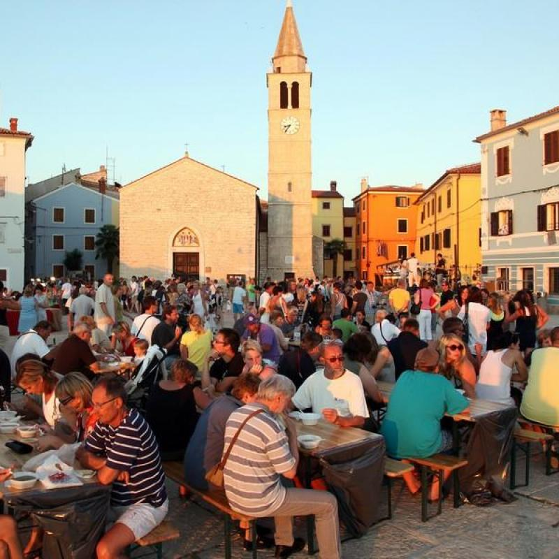

Fešta od srdela

Fažanska fešta
Mala ribarska akademija srdela
Svježa, još vrela, skinuta s gradela, sardela je u Fažani riba s posebnim okusom i mirisom Jadrana. Kao vrhunski doručak, kao glavno jelo, svejedno… Spremljena na različite načine, najbolji razlog za čašu malvazije ili terana, ova riba ima i svoju Akademiju u Fažani – Malu ribarsku akademiju Sardela – nedaleko od Pule a nadomak Brijunskog otočja!
Sakralna baština Fažane
Na tekovinama antike i kasne antike razvio se srednjovjekovni život Fažane i okolice. O tom razdoblju, posebice onom najranijem, ne zna se mnogo, no, sa sigurnošću se može reći da je kršćanstvo na ovim prostorima u ranom srednjem vijeku bilo duboko ukorijenjeno. Tome su svjedoci brojni ostaci sakralnog graditeljstva.
- Crkva Sv. Kuzme i Damjana
- Tragovi ostalih sakralnih objekata
- Restauracija objekata